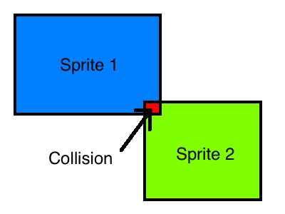
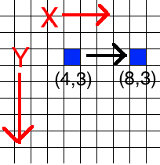

Every year for the past few years, I’ve been going to PAX East, an annual video game convention in Boston. Every time, I get inspired to make video games, but never actually act on that inspiration. I don’t know if it’s due to A) a lack of original ideas, B) poor artistic skill, C) laziness, or D) all of the above.
Shortly after my trip to PAX East in March of this year, I started a Coursera class about game programming in C#. In this class, I learned about writing C# games using Microsoft’s XNA Framework. The class was aimed at people who have never done programming before. However, I already knew the language features of C# taught in the class, so I was able to focus on learning about XNA objects and APIs, as well as game-programming-specific concepts like collision detection and calculating sprite velocities. A few of the games I created were a simple blackjack game and a game where you are a hamburger that shoots french fries at teddy bears while they bounce around and shoot mini teddy bears at you.
I would like to share what I learned in the course from the XNA and game development perspective.
The XNA Framework
Microsoft’s XNA XNA’s Not Acronymed Framework contains objects that make it relatively easy to create video games. There are objects for handling keyboard and mouse input, getting mouse state, drawing sprites on the screen, and working with sprite movement, to name a few.
The Mouse and MouseState classes allow you to get information about mouse position and button state. The Texture2D class contains information related to a grid of pixels that compose a sprite. The Rectangle class allows you to access information about the rectangle that represents the sprite, such as length, width, X position, Y, position, upper left corner, and so on. The Vector2 object is a commonly used object that defines a vector used in game physics.
Fundamental Game Concepts
The Game Loop
One of the most fundamental concepts in game programming is the game loop. The game loop constantly runs, checking for user input and updating the environment. For example, the game loop may have code to draw a bullet sprite from a spaceship when the left mouse button is pressed. There may be code to check for when a bullet sprite comes into contact with an alien sprite and play an explosion animation when that occurs. The game loop repeats indefinitely until the game is terminated.
For example, the game loop might look something like this:
while(gameIsRunning){
CheckForInputFromUser();
UpdateInternalGameState();
UpdateVisualsForPlayer();
}
The following code sample is from a simplified blackjack game I wrote for an assignment:
protected override void Update(GameTime gameTime)
{
MouseState mouseState = Mouse.GetState();
foreach(var menuButton in menuButtons){
if(currentState == GameState.WaitingForPlayer || currentState == GameState.DisplayingHandResults){
menuButton.Update(mouseState);
}
}
switch(currentState){
case GameState.PlayerHitting:
PlayerHit();
break;
case GameState.WaitingForDealer:
DealerTurn();
break;
case GameState.DealerHitting:
DealerHit();
break;
case GameState.CheckingHandOver:
CheckHandOver();
break;
case GameState.DisplayingHandResults:
break;
case GameState.Exiting:
Exit();
break;
default:
break;
}
base.Update(gameTime);
}
Every time this method executes (which is happening very often), it’s getting information about the mouse which is stored in mouseState. This includes the X and Y position of the cursor, which button(s) are pressed, etc.
The blackjack game was designed around a DFA, the states of which are determined by each of the GameState enum values. If the game is in either of the two states where player input is awaited (GameState.WaitingForPlayer and GameState.DisplayingHandResults), it’s going to call the Update method on each menu button within the game, which will check if any of the buttons (such as the Hit, Stand, or Quit buttons) have been clicked. If the game is not in any of those states, it’s going to go through the switch statement and execute the appropriate code which represents the DFA transition.
Sprites
In 2D game programming, all objects in the world are displayed as sprites. Player characters, enemies the player fights, items the player gets, and other objects and entities in the world are displayed as sprites. Sprites are rectangles of varying sizes that have images placed on them.

An explosion spritesheet containing the sprites for an animation. Taken from Dr. Tim “Dr. T” Chamillard’s course Beginning Game Programming With C#
Sprites have a length and width, as well as a position. The position is usually the upper left corner of the sprite, but in some situations, the center point of the sprite is used.
Collision Detection
In order for games to be interesting, things need to happen when sprites interact with each other. Collision detection is a term used to describe when the game checks for when sprites intersect each other and what to do when that happens. In Super Mario Bros, if Mario walks into a goomba, he shrinks if he’s big or he dies if he’s small. However, if he jumps on top of the goomba, he’ll bounce back up and get points. The goomba will also be dead.

In order for sprites to move, they usually have a velocity that dictates which direction they move and how fast, in terms of pixels per update cycle. By making a Vector2 a property of a game object, you can store information about the object’s velocity. You can pass in an X speed and a Y speed for the velocity. A positive X value indicates how many pixels to the right per update cycle you want the sprite to move. A negative X value is the same thing, except moving to the left instead of the right. A positive Y value incidates how many pixels down per update cycle you want the sprite to move, while a negative Y value is how many pixels up you want it to move.
In the image below, the blue square has an X speed of 4 and a Y speed of zero. It’s moving to the right at 4 pixels per cycle and it’s not moving up or down.

Removing Unused Resources
In a game where many objects appear on the screen, something must be done about those objects once they are off screen. The resources for those objects must be freed or else the game will suffer performance degredation. The computer might also run out of memory.
A simple way of doing this is having an IsActive or ReadyForDisposal property on each object and set it to the appropriate value when it’s on or off screen. When the game updates, check for any unused resources lingering around and delete them.
Criticism
One thing I dislike about game programming in XNA is that it seems difficult to do great OO programming. In the games I’ve done, I work out of a giant Game class. I have other classes for objects in my games, but it seems like a lot of stuff exists in my Game class. Game has its fingers in a lot of pies with having Initialize(), LoadContent(), UnloadContent(), Update(), and Draw() methods. I feel like it has too much responsibility. I suppose the game needs to simultaneously update the visuals of the game and the unseen logic, but I feel like that violates the Single Responsibility Principle because I see those two tings as two different responsibilities.
Conclusion
I have talked about some basic 2D game development concepts, as well as some of the XNA Framework’s API. Using the knowledge I’ve learned from the course, I’ve been able to make a few simple games that are fun to play. If you’ve ever wanted to make a video game, I encourage checking out this course. Get out there and have some fun!